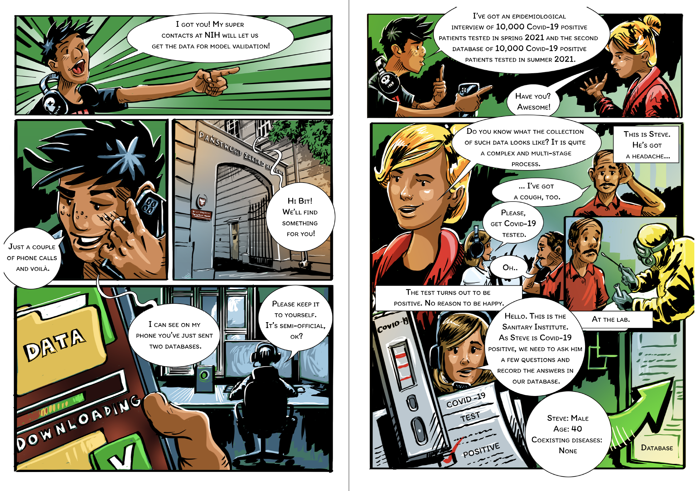
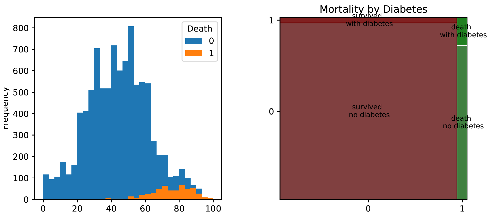
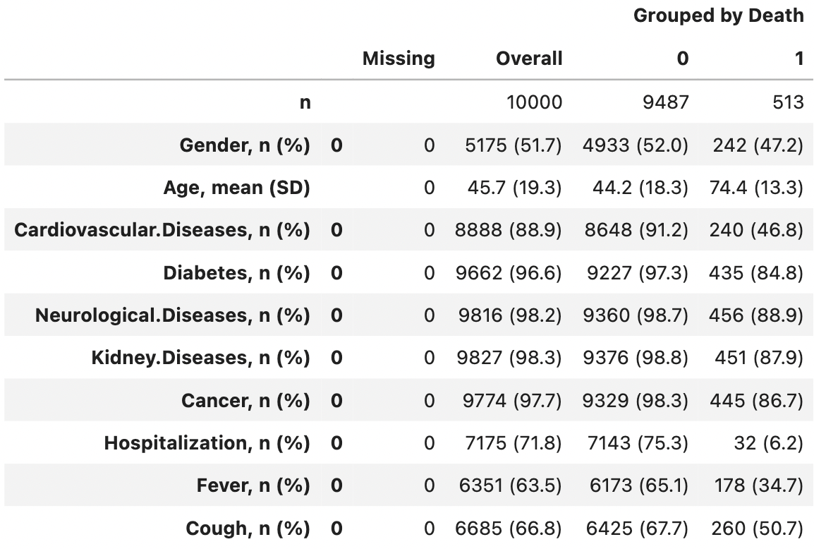
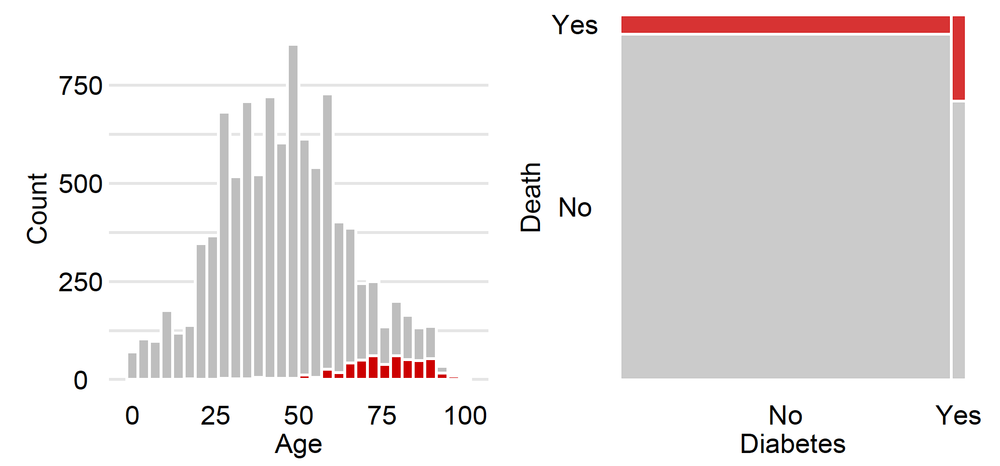

covid_spring = pd.read_csv("py_covid_spring.csv", delimiter=";")
covid_summer = pd.read_csv("py_covid_summer.csv", delimiter=";")Step 1. Data Exploration (EDA)

To build a model, we need good data. In Machine Learning, the word good means a large amount of representative data. Unfortunately, collecting representative data is neither easy nor cheap and often requires designing and conducting a specific experiment.
Please note that the attached data are not the real data collected for epidemiological purposes, but artificially generated data preserving the structure and relationships in the actual data.
The best possible scenario is that one can design and run a study to collect the necessary data. In less comfortable situations, we look for “natural experiments,” i.e., data that have been collected for another purpose but that can be used to build a model. Here we use the data collected through epidemiological interviews. The number of interviewed patients is large, so we treat this data as representative, although unfortunately, this data only involves symptomatic patients who are tested positive for SARS-COV-2. Asymptomatic cases are more likely to be young adults.
The data is divided into two sets: covid_spring and covid_summer. The first set was acquired in spring 2020 and will be used as training data, while the second dataset was acquired in the summer and will be used for validation. In machine learning, model validation is performed on a separate data set called validation data. This controls the risk of overfitting an elastic model to the training data. If we do not have a separate set, then it is generated using cross-validation, out-of-sample, out-of-time or similar data splitting techniques.
Python snippet
All files needed to replicate the following code are available at website https://github.com/BetaAndBit/RML2. Download csv file with data and save them the working directory. Let’s start our analyses with reading data from these files.
Let’s use the package matplotlib to draw a simple histogram for Age variable, and statsmodels to draw a mosaic plot for Diabetes variable.
import matplotlib.pyplot as plt
covid_spring.pivot(columns="Death", values="Age").plot.hist(bins=30)
plt.show()
from statsmodels.graphics.mosaicplot import mosaic
mosaic(covid_spring, ['Death', 'Diabetes'])
plt.show()
A handy way to summarise tabular data in groups is the so-called ,,Table 1’’. This is a summary of the main characteristics of each variable broken down into groups defined by the variable of interest (here, binary information about Covid death). The name stems from the fact that this summary of the data is usually the first table to be shown in many medical and related scientific journals.
from tableone import TableOne
columns = ['Gender', 'Age', 'Cardiovascular.Diseases', 'Diabetes',
'Neurological.Diseases', 'Kidney.Diseases', 'Cancer',
'Hospitalization', 'Fever', 'Cough', 'Death']
categorical = ['Gender', 'Cardiovascular.Diseases', 'Diabetes',
'Neurological.Diseases', 'Kidney.Diseases', 'Cancer',
'Hospitalization', 'Fever', 'Cough']
groupby = ['Death']
TableOne(covid_spring, columns=columns,
categorical=categorical, groupby=groupby, limit=1) 
One of the most important rules to remember when building a predictive model is: Do not condition on future!. I.e. do not use variables that are not defined at the time the prediction needs to be made. Note that in the discussed case variables Hospitalization, Fever or Cough are not good predictors because they are not known in advance before infection. In the following lines, we remove invalid variables from both data sets.
selected_vars = ['Gender', 'Age', 'Cardiovascular.Diseases',
'Diabetes', 'Neurological.Diseases', 'Kidney.Diseases',
'Cancer', 'Death']
# use only selected variables
covid_spring = covid_spring.loc[:, selected_vars]
covid_summer = covid_summer.loc[:, selected_vars]Data exploration and cleansing often consume most of the time spent on data analysis. Here we have only touched on exploration, but even this initial analysis helped to determine that Age is an important characteristic (we will confirm this later). We will build further models only on variables from the selected_vars vector.
R snippets
The R software offers hundreds of specialized solutions for exploratory data analysis. Certainly, many valuable solutions can be found in the book ,,R for Data Science’’ (Wickham and Grolemund 2017), but there are much more. Below we show just three examples.
Wickham, Hadley, and Garrett Grolemund. 2017. R for Data Science: Import, Tidy, Transform, Visualize, and Model Data. O’Reilly Media, Inc.
All files needed to replicate the following code are available at https://github.com/BetaAndBit/RML. Download it and save in the working directory. Let’s start with reading the data.
covid_spring <- read.table("covid_spring.csv", sep =";", header = TRUE)
covid_summer <- read.table("covid_summer.csv", sep =";", header = TRUE)We use the package to draw a simple histogram for Age, and ggmosaic to draw a mosaic plot for Diabetes. Note that the plots in the margins are graphically edited, so they look slightly different from the plots generated by these short instructions.
library("ggplot2")
ggplot(covid_spring) + geom_histogram(aes(Age, fill = Death))
library("ggmosaic")
ggplot(data = covid_spring) +
geom_mosaic(aes(x=product(Diabetes), fill = Death))A handy way to summarise tabular data in groups is the so-called ,,Table 1’’. This is a summary of the main characteristics of each variable broken down into groups defined by the variable of interest (here, binary information about Covid death).

library("tableone")
CreateTableOne(vars = colnames(covid_spring)[1:10],
data = covid_spring,
strata = "Death")
# Stratified by Death
# No Yes
# n 9487 513
# Gender = Male (%) 4554 (48.0) 271 (52.8) 0.037
# Age (mean (SD)) 44.19 (18.32) 74.44 (13.2) <0.001
# CardiovascularDiseases = Yes (%) 839 ( 8.8) 273 (53.2) <0.001
# Diabetes = Yes (%) 260 ( 2.7) 78 (15.2) <0.001
# Neurological.Diseases = Yes (%) 127 ( 1.3) 57 (11.1) <0.001
# Kidney.Diseases = Yes (%) 111 ( 1.2) 62 (12.1) <0.001
# Cancer = Yes (%) 158 ( 1.7) 68 (13.3) <0.001
# Hospitalization = Yes (%) 2344 (24.7) 481 (93.8) <0.001
# Fever = Yes (%) 3314 (34.9) 335 (65.3) <0.001
# Cough = Yes (%) 3062 (32.3) 253 (49.3) <0.001 One of the most important rules to remember when building a predictive model is: Do not condition on future!. I.e. do not use variables that are not defined at the time the prediction needs to be made. Note that in the discussed case variables Hospitalization, Fever or Cough are not good predictors because they are not known in advance before infection. In the following lines, we remove invalid variables from both data sets.
selected_vars <- c("Gender", "Age", "Cardiovascular.Diseases",
"Diabetes", "Neurological.Diseases", "Kidney.Diseases",
"Cancer", "Death")
# use only selected variables
covid_spring <- covid_spring[,selected_vars]
covid_summer <- covid_summer[,selected_vars]Data exploration and cleansing often consume most of the time spent on data analysis. Here we have only touched on exploration, but even this initial analysis helped to determine that Age is an important characteristic (we will confirm this later).